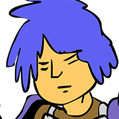

吉田
くそっ…… 余裕しゃくしゃくで勝ったつもりか！？
総統
落ち着くんじゃ、吉田くん。 気持ちは分かるが……。
セリア
どうやらアンタの顔が、 相手の癇に障っているらしいわよ、カル。
レオナルド博士
こういう時こそ、 オレが調整していた追加機能だ！オラ！
総統
そうじゃった！早く追加機能のスイッチを 入れるんじゃ、吉田くん。
？？？
なんだかちょっと気が遠くなったけど……。 ダメージとかは……負ってないわよね……。


カル
…………。
総統
おお、やつらの姿がしまね風に変わりおった すごいじゃないか博士！
レオナルド博士
当たり前だ！しまね化が風景だけじゃ 完全じゃねーだろ。
レオナルド博士
ちなみに、イラストは鷹の爪作者の ＦＲＯＧＭＡＮが描きおろしたぞ！
吉田
いけ好かないイケメンが、一転して 落書きレベルになってしまいましたね。
吉田
一方、あんまりデレないお姉さんの方は、 そんなに変わってないみたいですけど。
セリア
ふざけないで！ 私はこんなブサイクじゃないわよ！！
セリア
ちょ、ちょっとカル、 あんたもなんか言いなさいよ！
カル
サーセン！ ジブン、難しいことワカンネーッス！
吉田
どうやら外見に合わせて、 中身もペラペラになったようですね。
総統
雑なアニメキャラのワシらが 普段どういう気持ちで過ごしているか、
総統
リアル調キャラのお前さん達も、 思う存分味わうがいい！
to be continued...